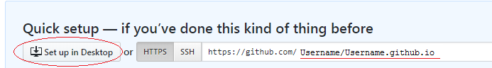

First, we'll create an account with GitHub. (Unless you already have one.) Note: you will need an email address that you can access to confirm your account.) Git is a cloud repository for you code, that will also let you publish a simple website for free.
1. Go to https://github.com/, and click the button to Sign up for GitHub
2. Create an account. Your username will be the name on your website, so consider what you would like...
CodeChick ?
GirlsLoveTech ?
MyNameOnTheWeb ?
Have some fun with this!

3. Choose 'Unlimited public repositories for free', and click Continue.
4. You'll need to go to your email address and verify the account. Just click the link that GitHub sends you.
5. Now that we have an account, we'll need to set it up. Go to GitHub.com, and sign in.
6. On the left side is a menu. We want the item 'Repositories'. [highlight link in pic]

7. Click 'create one' to create a new repository.
8. We're going to use the Quick setup. But here's the IMPORTANT part: you want the URL to be exactly your username.git.io.git Then click the button to 'Set up in Desktop'. [highlight button in pic]
9. That should have opened an application called GitHub Desktop.
Wow, that was a lot to set up. But now, we can have some fun.
Ravi,